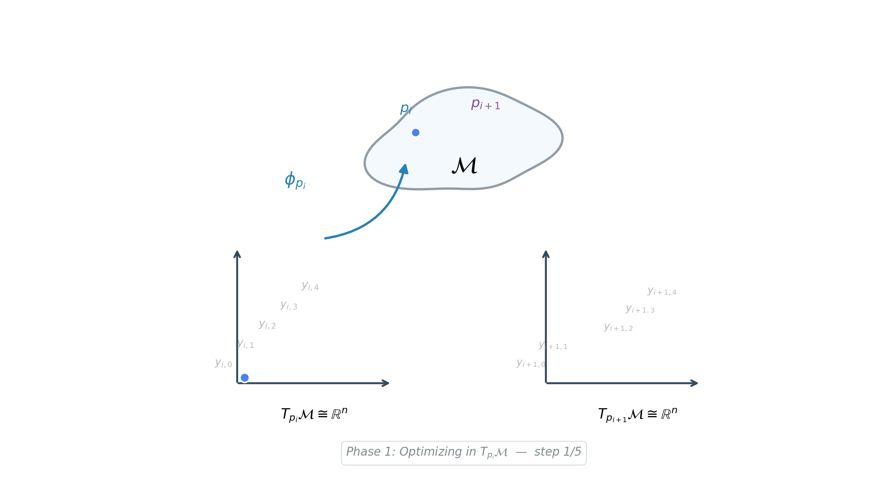

Geometric Concepts#
This page provides a comprehensive introduction to the geometric foundations underlying Riemannian methods for EEG/MEG analysis and deep learning with covariance matrices on the SPD (Symmetric Positive Definite) manifold.
The SPD Manifold#
What is an SPD Matrix?#
A Symmetric Positive Definite (SPD) matrix \(X \in \reals^{n \times n}\) satisfies two conditions:
Symmetry: \(X = X^\top\)
Positive Definiteness: \(z^\top X z > 0\) for all non-zero vectors \(z \in \reals^n\)
Equivalently, an SPD matrix has all positive eigenvalues [Bhatia, 2007]. The set of all \(n \times n\) SPD matrices is denoted \(\spd\) [Congedo et al., 2017].
Eigendecomposition:
For any SPD matrix \(X\), there exists an orthogonal matrix \(U\) such that:
where \(\lambda_i > 0\) are the positive eigenvalues. This decomposition is fundamental to computing matrix functions on SPD matrices.
Why SPD Matrices Form a Manifold, or why not a Vector Space?#
SPD matrices do not form a vector space because:
Not closed under subtraction: If \(A, B\) are SPD, \(A - B\) may not be SPD (positive definiteness can be violated).
Not closed under negative scaling: If \(A\) is SPD, \(-A\) is negative definite.
The “swelling effect”: The Euclidean mean of SPD matrices can have larger determinant than any of the original matrices, which is geometrically undesirable for covariance estimation.
Instead, SPD matrices form an open cone in the space of symmetric matrices. This cone has a natural manifold structure with well-defined notions of distance, geodesics, and curvature. These geometric properties require specialized tools to work with, which is the focus of SPD Learn!
The SPD Cone (2x2 Example)#
For \(2 \times 2\) matrices, we can visualize the SPD cone. A symmetric \(2 \times 2\) matrix has three free parameters:
The positive definiteness constraints are:
\(a > 0\) (first leading minor)
\(ac - b^2 > 0\) (determinant, second leading minor)
This defines an open cone in \((a, b, c)\) space, where the boundary corresponds to singular (rank-deficient) matrices.
The interactive visualization below shows the SPD cone with sample EEG covariance matrices plotted as points. The identity matrix serves as a reference point, and the tangent space at the identity (the space of symmetric matrices) is shown as a plane.
Tip
Use your mouse to rotate, zoom, and explore the 3D visualization. Hover over points to see their details.
Tangent Spaces and Exponential Maps#
Tangent Space at a Point#
At any point \(P\) on the SPD manifold, the tangent space \(\tangent{P}\) can be identified with symmetric matrices [Congedo et al., 2017]. This is a vector space where we can perform standard linear algebra operations.
The tangent space at the identity \(\I\) is particularly important because many operations are simplified there.
The Exponential Map#
The exponential map \(\Exp{P}: \tangent{P} \to \manifold\) projects tangent vectors back onto the manifold. At the identity:
where \(\exp\) is the matrix exponential. This maps any symmetric matrix to an SPD matrix, ensuring we stay on the manifold.
For a symmetric matrix \(S\) with eigendecomposition \(S = U \Lambda U^\top\):
Since \(\exp(\lambda_i) > 0\) for all real \(\lambda_i\), the result is always SPD.
The Logarithmic Map#
The logarithmic map \(\Log{P}: \manifold \to \tangent{P}\) is the inverse, projecting from the manifold to the tangent space:
For an SPD matrix \(X\) with eigendecomposition \(X = U \Lambda U^\top\):
Warning
The matrix logarithm is only defined for SPD matrices. If any eigenvalue \(\lambda_i \leq 0\), the logarithm is undefined or complex-valued.
This is the key operation in SPD Learn’s LogEig layer, which maps SPD
matrices to a vector space for classification.
Riemannian Metrics on SPD Manifolds#
A Riemannian metric defines inner products on tangent spaces, enabling us to measure distances and angles on the manifold. The space of SPD matrices can be equipped with various Riemannian metrics, each leading to distinct geometric structures. This section reviews four principal Riemannian metrics that are widely used in the analysis and learning of SPD matrices.
Affine-Invariant Riemannian Metric (AIRM)#
The Affine-Invariant Riemannian Metric [Pennec et al., 2006] endows the SPD manifold with a geometry that is invariant under congruence transformations. Specifically, for any non-singular matrix \(W \in \gl\) and SPD matrices \(P, Q \in \spd\):
Riemannian inner product: At \(P \in \spd\), for tangent vectors \(v, w \in \tangentspd{P}\):
Geodesic distance:
Geodesic (shortest path):
Note
Extrapolation property: Unlike many metrics, the AIRM geodesic \(\gamma(t) = A^{1/2} (A^{-1/2} B A^{-1/2})^t A^{1/2}\) remains SPD for all \(t \in \reals\), not just \(t \in [0, 1]\). This allows extrapolation beyond the endpoints, which can be useful for data augmentation or exploring the manifold structure.
Distance to identity: \(\dairm{P}{\I} = \frob{\log(P)}\)
Key Properties:
Geodesically complete: The SPD manifold with AIRM forms a Hadamard manifold (complete, simply connected with non-positive sectional curvature), guaranteeing unique geodesics between any two SPD matrices.
Boundary avoidance: Geodesics between SPD matrices never reach singular matrices (zero eigenvalues are infinitely distant).
Affine-invariant: \(d(GAG^\top, GBG^\top) = d(A, B)\) for invertible \(G\).
Fréchet mean uniqueness: The Fréchet mean of a finite set of SPD matrices always exists and is unique.
Computationally expensive: Requires eigendecomposition; computing the exact Fréchet mean requires iterative solvers such as the Karcher flow.
from spd_learn.functional import (
airm_distance,
airm_geodesic,
)
# Distance between SPD matrices
dist = airm_distance(A, B)
# Geodesic interpolation (t=0 gives A, t=1 gives B)
midpoint = airm_geodesic(A, B, t=0.5)
See also
Properties of the Geometric Mean#
The Riemannian (geometric) mean under AIRM satisfies all 10 axiomatic properties established by Ando et al. [2004]:
Consistency with scalars: Reduces to ordinary geometric mean for 1×1 matrices
Joint homogeneity: \(\geomean(\alpha P_1, \ldots, \alpha P_k) = \alpha \geomean(P_1, \ldots, P_k)\)
Permutation invariance: Independent of matrix ordering
Monotonicity: If \(P_i \leq Q_i\), then \(\geomean(P_1, \ldots) \leq \geomean(Q_1, \ldots)\)
Continuity from above: Continuous under decreasing sequences
Congruence invariance: \(\geomean(B^\top P_1 B, \ldots) = B^\top \geomean(P_1, \ldots) B\)
Joint concavity: The mean function is jointly concave
Self-duality: \(\geomean(P_1^{-1}, \ldots, P_k^{-1}) = \geomean(P_1, \ldots, P_k)^{-1}\)
AGH inequality: Harmonic mean \(\leq\) Geometric mean \(\leq\) Arithmetic mean
Determinant identity: \(\det \geomean = (\prod_i \det P_i)^{1/k}\) (unweighted case)
Riccati Equation Characterization:
The geometric mean \(\geomean\) of two SPD matrices \(P\) and \(Q\) is the unique positive definite solution to the Riccati equation:
This characterization provides an algebraic interpretation of the geometric mean and connects it to control theory.
Log-Euclidean Metric (LEM)#
The Log-Euclidean Metric [Arsigny et al., 2007] simplifies computations by exploiting the matrix logarithm to map the SPD manifold diffeomorphically to the Euclidean vector space of symmetric matrices \(\syms\). The mapping \(\log: \spd \to \syms\) is a global diffeomorphism (a smooth, invertible map with smooth inverse).
Riemannian inner product: The LEM is defined as the pullback of the Euclidean metric through the logarithm. For any \(P \in \spd\) and tangent vectors \(v, w\):
where \(D_P \log\) denotes the differential of the logarithm at \(P\).
Distance:
Distance to identity: \(\dlem{P}{\I} = \frob{\log(P)}\) (same as AIRM at identity)
Fréchet mean (closed-form):
Key Properties:
Lie group structure: Gives SPD matrices the structure of a commutative Lie group.
Computationally efficient: Enables computations in the log-domain using standard Euclidean operations.
Not affine-invariant: Unlike AIRM, LEM is only invariant under orthogonal transformations (rotations), not general affine transformations.
Closed-form mean: The Fréchet mean can be computed directly without iteration.
from spd_learn.functional import (
log_euclidean_distance,
log_euclidean_mean,
)
# Distance
dist = log_euclidean_distance(A, B)
# Weighted mean (using uniform weights for unweighted mean)
weights = torch.ones(batch_size, batch_size) / batch_size
mean = log_euclidean_mean(weights, batch_of_spd_matrices)
See also
Bures-Wasserstein Metric (BWM)#
The Bures-Wasserstein Metric [Bhatia et al., 2019] originates from quantum information theory and optimal transport. It corresponds to the 2-Wasserstein distance between centered Gaussian distributions.
Riemannian inner product: At \(P \in \spd\), for tangent matrices \(V, W\):
where \(\lyap{P}\) is the Lyapunov operator that assigns to each \(V \in \syms\) the unique solution \(X\) of the Lyapunov equation:
Distance:
Distance to identity: \(\dbw{P}{\I}^2 = \tr(P) + n - 2\tr(P^{1/2})\)
Geodesic:
where \(M = (A^{1/2} B A^{1/2})^{1/2}\).
Key Properties:
Positively curved: Unlike AIRM (non-positive curvature), BWM endows \(\spd\) with a positively curved Riemannian structure.
Optimal transport interpretation: The distance equals the 2-Wasserstein distance between \(\mathcal{N}(0, A)\) and \(\mathcal{N}(0, B)\).
Closed-form expressions: Distances, geodesics, and Fréchet means have closed-form solutions (Fréchet means via fixed-point iteration).
No eigendecomposition: Avoids eigenvalue decomposition, using matrix square roots.
Not affine-invariant: Invariant only under unitary transformations.
from spd_learn.functional import bures_wasserstein_distance, bures_wasserstein_mean
# Distance
dist = bures_wasserstein_distance(A, B)
# Fréchet mean (fixed-point iteration)
mean = bures_wasserstein_mean(matrices, weights)
Log-Cholesky Metric (LCM)#
The Log-Cholesky Metric [Lin, 2019] builds upon the Cholesky decomposition \(P = LL^\top\), where \(L\) is a lower-triangular matrix with positive diagonal entries. There exists a smooth bijection (diffeomorphism) \(\varphi: \choleskyspace \to \spd\), where \(\choleskyspace\) denotes the Cholesky space of lower-triangular matrices with positive diagonals.
Riemannian inner product: At \(P = LL^\top \in \spd\):
where \((\cdot)_\triangle\) extracts the lower-triangular part and scales diagonal elements by \(\frac{1}{2}\). The metric \(\bar{g}_L\) on \(\choleskyspace\) is:
Distance:
where \(\logchol(L) = \tril{L, -1} + \diag(\log(\diag(L)))\).
Key Properties:
Fastest computation: Complexity \(O(n^3/3)\) vs \(O(n^3)\) for eigendecomposition.
Numerically stable: Cholesky decomposition is well-conditioned for SPD matrices.
Globally flat geometry: Inherits Euclidean structure from Cholesky space.
Closed-form geodesics and means: No iterative optimization required.
Not affine-invariant: Invariant under lower-triangular transformations with positive diagonal.
Ideal for optimization: Avoids explicit matrix inversions and logarithms, yielding improved differentiability for deep learning.
from spd_learn.functional import log_cholesky_distance, log_cholesky_mean
# Fast distance computation
dist = log_cholesky_distance(A, B)
# Closed-form mean
mean = log_cholesky_mean(matrices)
Metric Comparison Summary#
These four metrics capture distinct geometric perspectives on \(\spd\) and serve different computational and modeling goals:
Metric |
Complexity |
Invariance |
Curvature |
Best For |
|---|---|---|---|---|
AIRM |
\(O(n^3)\) |
Full affine |
Non-positive |
Theoretical analysis, domain adaptation [Zanini et al., 2017] |
Log-Euclidean |
\(O(n^3)\) |
Orthogonal |
Flat |
General use, closed-form mean |
Bures-Wasserstein |
\(O(n^3)\) |
Unitary |
Positive |
Optimal transport, ill-conditioned matrices |
Log-Cholesky |
\(O(n^3/3)\) |
Lower-triangular |
Flat |
Speed-critical, deep learning |
Choosing a metric:
Use AIRM when affine invariance is important (e.g., domain adaptation across subjects/sessions where the covariance scale may differ).
Use LEM for general-purpose applications where a closed-form mean is desirable and affine invariance is not critical.
Use BWM when working with ill-conditioned matrices or when an optimal transport interpretation is meaningful.
Use LCM when computational speed is paramount or in deep learning where gradient stability is important
Invariance Properties#
Different metrics satisfy different invariance properties, which determine their behavior under geometric transformations:
Metric |
Rotation |
Affinity |
Inversion |
Notes |
|---|---|---|---|---|
AIRM |
Yes |
Yes |
Yes |
Full invariance |
Log-Euclidean |
Yes |
No |
Yes |
Orthogonal only; inversion invariant |
Bures-Wasserstein |
Yes |
No |
No |
Unitary only |
Log-Cholesky |
No |
No |
No |
Lower-triangular only |
Definitions:
Rotation invariance: \(d(U^\top P U, U^\top Q U) = d(P, Q)\) for orthogonal \(U\)
Affinity (congruence) invariance: \(d(B^\top P B, B^\top Q B) = d(P, Q)\) for invertible \(B\)
Inversion invariance: \(d(P^{-1}, Q^{-1}) = d(P, Q)\)
Parallel Transport#
Parallel transport moves tangent vectors between different tangent spaces while preserving their geometric properties [Zanini et al., 2017]. This is essential for:
Domain adaptation (transferring learned representations)
Comparing tangent vectors at different reference points
Under the AIRM, parallel transport from \(\tangent{P}\) to \(\tangent{Q}\):
where \(E = (Q P^{-1})^{1/2}\).
from spd_learn.functional import parallel_transport_airm
# Transport tangent vector V from T_P to T_Q
V_transported = parallel_transport_airm(V, P, Q)
See also
Trivialization#
When optimizing functions on manifolds (like the SPD manifold of covariance matrices), we face a fundamental challenge: manifolds are curved spaces where standard Euclidean gradient descent doesn’t directly apply.
Trivialization is a technique that transforms manifold-constrained optimization into unconstrained optimization by parametrizing the manifold through its tangent space.
The animation below illustrates the concept of Trivialization from Lezcano-Casado [2019]:
{kind=link}
Key concepts illustrated:
Manifold \(\manifold\) — The curved space where our data lives (e.g., SPD matrices representing EEG spatial covariance)
Tangent Space \(\tangent{p} \cong \reals^n\) — A flat Euclidean approximation at point \(p\), where standard optimization algorithms can be applied
Exponential Map \(\phi_p\) — Projects points from the tangent space back onto the manifold
Dynamic Update — When optimization moves too far from the base point, we update: \(p_{i+1} := \phi_{p_i}(y_{i,k})\) and continue optimizing in the new tangent space
Practical Implications#
Distance computation: Use
log_euclidean_distance()for speed,airm_distance()for affine invariance,bures_wasserstein_distance()for ill-conditioned matrices.Averaging: Always use geometric means (
log_euclidean_mean(),bures_wasserstein_mean(), orlog_cholesky_mean()) instead of arithmetic means for SPD matrices.Classification: Project to tangent space (
LogEig) before applying standard classifiers.Domain adaptation: Use parallel transport (
parallel_transport_airm()) to align representations across subjects or sessions.
SPD Layer Visualizations#
Understanding how SPD network layers transform data on the manifold is crucial for building intuition about geometric deep learning. The visualizations below show each layer’s operation using 2x2 SPD matrices represented as ellipsoids.
CovLayer — Transforms time series into SPD covariance matrices:
BiMap — Bilinear mapping that reduces/expands dimensionality:
where \(W\) is constrained to the Stiefel manifold (\(W^T W = I\)). See BiMap Layer Animation
ReEig — Eigenvalue rectification (ReLU for SPD matrices):
LogEig — Projects SPD matrices to the tangent space:
See LogEig: Linearization and the Swelling Effect
SPDBatchNormMeanVar — Riemannian batch normalization:
where \(\frechet\) is the Fréchet mean of the batch. See SPD Batch Normalization Animation
References#
Zhenhua Lin. Riemannian geometry of symmetric positive definite matrices via cholesky decomposition. SIAM Journal on Matrix Analysis and Applications, 40(4):1353–1370, 2019. doi:10.1137/18M1221084.
Mario Lezcano-Casado. Trivializations for gradient-based optimization on manifolds. In Advances in Neural Information Processing Systems, volume 32, 9154–9164. 2019. URL: https://proceedings.neurips.cc/paper/2019/hash/1b33d16fc562464579b7199ca3114982-Abstract.html.
Rajendra Bhatia. Positive Definite Matrices. Princeton University Press, 2007. doi:10.1515/9781400827787.
Marco Congedo, Alexandre Barachant, and Rajendra Bhatia. Riemannian geometry for eeg-based brain-computer interfaces; a primer and a review. Brain-Computer Interfaces, 4(3):155–174, 2017. doi:10.1080/2326263X.2017.1297192.
Xavier Pennec, Pierre Fillard, and Nicholas Ayache. A riemannian framework for tensor computing. International Journal of Computer Vision, 66(1):41–66, 2006. doi:10.1007/s11263-005-3222-z.
Tsuyoshi Ando, Chi-Kwong Li, and Roy Mathias. Geometric means. Linear Algebra and its Applications, 385:305–334, 2004. doi:10.1016/j.laa.2003.11.019.
Vincent Arsigny, Pierre Fillard, Xavier Pennec, and Nicholas Ayache. Geometric means in a novel vector space structure on symmetric positive-definite matrices. SIAM Journal on Matrix Analysis and Applications, 29(1):328–347, 2007. doi:10.1137/050637996.
Rajendra Bhatia, Tanvi Jain, and Yongdo Lim. On the bures-wasserstein distance between positive definite matrices. Expositiones Mathematicae, 37(2):165–191, 2019. doi:10.1016/j.exmath.2018.01.002.
See also
SPD Layer Visualizations — All visualization examples
User Guide — Getting started with SPD Learn
API Reference — API Reference for all geometric operations
Frequently Asked Questions — Frequently asked questions
Contributing — Contributing to SPD Learn